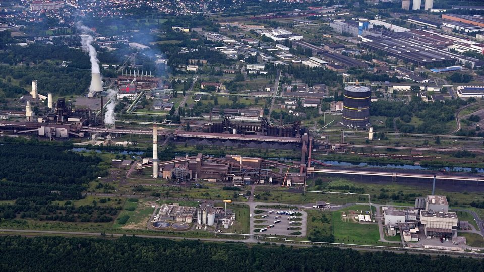
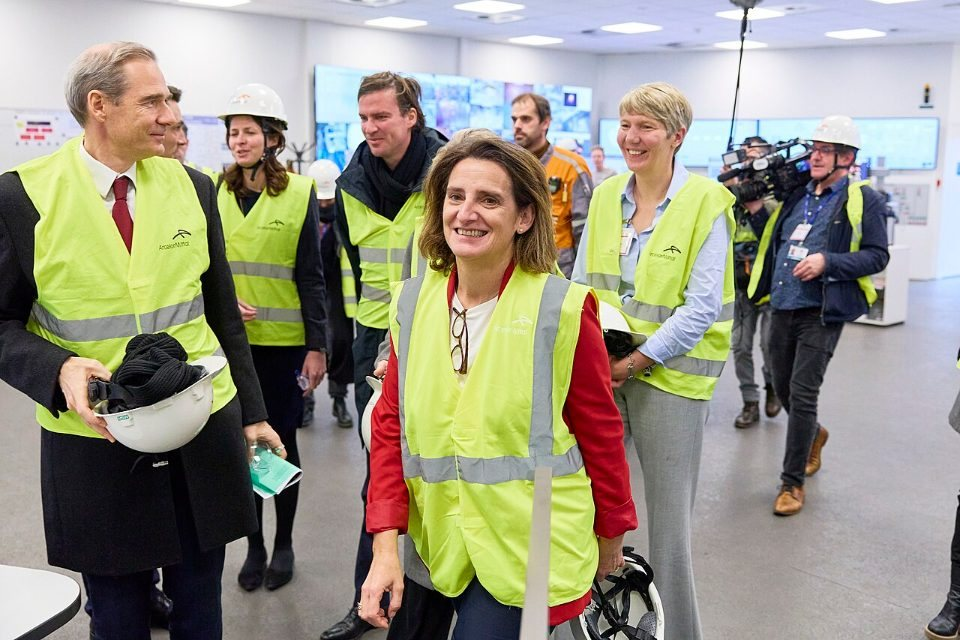
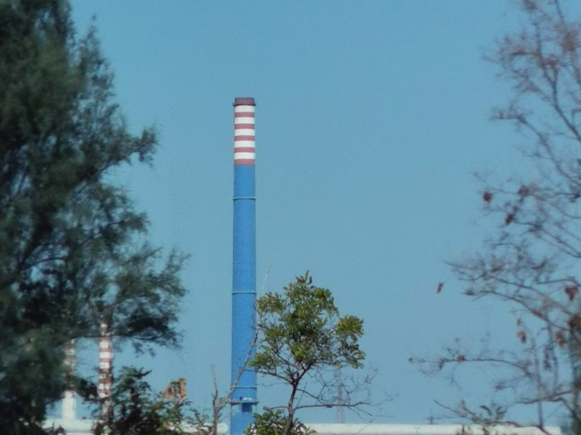

GLOBAL MILLS · EUROPE · 2026.09
歐洲鋼市 9 月觀察：熱軋價格一年多漲近三成，產量仍停在谷底
鋼鐵潮流工作室 · 發布 2026.10.11

本期重點
歐洲鋼價和美國一樣在漲，背後的原因卻不一樣。北歐熱軋鋼捲 9 月 28 日報每公噸 745 歐元，比 1 月底的 650 歐元高 15%，比去年 8 月底的 578 歐元高約 29%；但歐盟 1–8 月粗鋼產量 8,450 萬噸、年減 0.3%，EUROFER 也把今年用鋼量預測下修到只增 0.1%。從數據看，這一輪漲價主要來自供給與成本：7 月上路的配額新制、1 月起進入正式期的 CBAM、多座鋼廠停產或減產，以及再度攀升的天然氣價格。
- 價格走高、買方抵抗：9 月底北歐熱軋報 745 歐元，一貫廠試圖把報價推到 760 至 770 歐元，但經銷商庫存偏高、工業訂單不多，買方並不接受。
- 產量持平：1–8 月歐盟粗鋼產量年減 0.3%，德國年增 6.3% 撐住大盤；5 月產能利用率 67%，仍處歷史低檔。
- 需求疲弱：EUROFER 10 月 1 日把今年歐盟表觀用鋼量預測從 +0.4% 下修到 +0.1%，汽車業產出預估年減 0.9%。
- 進出口雙降：上半年歐盟鋼材進口年減 5%，出口則大減 20%；新配額首季已有多項國別配額用罄。
- 供給出狀況：Eisenhüttenstadt 高爐停機近兩週，Taranto 熱端被法院命令在 10 月 28 日前停工，ArcelorMittal 宣布杜伊斯堡廠 2027 年底結束煉鋼。
關鍵數字
價格：一年多漲近三成，9 月底買方開始抵抗
北歐熱軋鋼捲出廠價從去年 8 月底的每公噸 578 歐元一路墊高。今年 1 月底報 650 歐元，當時鋼廠交期拉長、可供貨量吃緊，市場已預期下半年配額新制上路後價格會再走高；3 月初升到 692.5 歐元，7 月 20 日來到 713.75 歐元。8 月下旬報價在 700 至 720 歐元之間，部分鋼廠喊出 10 月交貨 800 歐元的目標。
9 月 28 日北歐熱軋報 745 歐元，義大利報 741.25 歐元、週漲 7.5 歐元。不過現貨成交清淡，一貫廠想把報價拉到 760 至 770 歐元，區域買方以經銷商庫存偏高、新的工業訂單不多為由拒絕。另一方面，據 ChemAnalyst 報導，Eisenhüttenstadt 高爐停機與 Taranto 熱端即將關閉等供給中斷，讓經銷商上修第四季的價格預期。
產量：德國撐盤，整體停在谷底
依世界鋼鐵協會統計，歐盟 27 國 8 月粗鋼產量 890 萬噸、年減 1.0%；1–8 月累計 8,450 萬噸，年減 0.3%。德國是少數亮點，1–8 月產量 2,390 萬噸、年增 6.3%。歐盟以外的歐洲國家（含土耳其、英國等）1–8 月產量 2,950 萬噸，年增 4.8%。
拉長來看，歐盟 2025 年粗鋼產量只有 1.258 億噸，是有紀錄以來最低；今年 5 月產能利用率 67%，比 2025 年的 65% 略高，仍遠低於歷史水準。EUROFER 指出，持續的工業萎縮與高營運成本，正迫使歐洲一貫廠減少高爐產量。
需求：EUROFER 再下修
EUROFER 10 月 1 日發布的展望，把 2026 年歐盟表觀用鋼量成長率從 +0.4% 下修到 +0.1%，總量約 1.35 億噸，仍比 2019 年少約 700 萬噸；2027 年預估回升 2.3% 至 1.38 億噸。第一季表觀用鋼量 3,440 萬噸，年增 1.5%。
分產業看，營建與機械今年預估各成長 1.8%、1.9%，汽車則年減 0.9%，要到 2027 年才回升 3.5%。總體經濟並不差，歐盟第二季 GDP 年增 1.2%，西班牙達 2.7%；EUROFER 點名荷莫茲海峽航運受阻拖累製造業需求，偏高的生產與能源成本則壓抑了鋼廠產量。
貿易：進口降，出口降更多
EUROFER 統計，上半年歐盟鋼材進口年減 5%，成品鋼進口年減 3%；其中長條鋼進口第一、二季分別年減 18%、19%，平板鋼進口第二季卻年增 15%。第一季進口占表觀用鋼量的 23%，低於 2025 年的 30%。出口的處境更糟：上半年對第三國出口年減 20%，EUROFER 總幹事 Eggert 稱這是「令人警惕的訊號」。

貿易規則今年有三個重要時點。1 月 1 日起 CBAM 結束過渡期、進入正式期，今年起進口的鋼材須依碳排放繳交 CBAM 憑證（憑證 2027 年 2 月起開始販售）；7 月 1 日起，歐盟以新鋼鐵法規取代到期的防衛措施，免稅配額平均削減 47%，配額外關稅提高到 50%；10 月 1 日起，進口商還必須申報熔鑄地。新制第一季（7 至 9 月）已有多項國別配額用罄，例如印度的有機塗層鋼板與焊接鋼管、澳洲的熱軋鋼捲、中國的商用棒鋼（merchant bar），進口商只能繳納配額外關稅，或把貨留在港口等 10 月新一季配額。制度細節見〈歐盟鋼鐵新制〉與〈CBAM 一次看懂〉。
成本：天然氣價格創三年多來高點
能源是歐洲鋼廠和美國同業最大的差距之一。荷蘭 TTF 天然氣價格 9 月 2 日漲到每百萬瓦時 74.4 歐元，9 月 11 日突破 75 歐元，創 2023 年初以來新高；市場擔心伊朗相關衝突擴大，影響卡達等地經荷莫茲海峽運出的液化天然氣。電爐需要電、一貫廠的軋延與加熱爐也需要天然氣，能源成本上升，也讓鋼廠更難擴產。
鋼廠動態：停產、關廠與減碳計畫延後
- ArcelorMittal 杜伊斯堡廠：9 月 1 日宣布 2027 年底前結束煉鋼，關閉煉鋼廠與鋼胚軋機，改為外購鋼胚、只保留線材軋延。該廠粗鋼年產能 100 萬噸，約 800 名員工中約 550 個職位受影響。原因是向 thyssenkrupp 購買鐵水的合約將於 2027 年 9 月到期，延長合約成本大增，改建電爐也不划算。
- ArcelorMittal Eisenhüttenstadt 廠：唯一運轉中的 5A 高爐 9 月 25 日起技術性停機，10 月 6 日恢復，期間熱軋產線部分停產。
- Acciaierie d'Italia（Taranto）：米蘭上訴法院 7 月裁定 Taranto 鋼廠須在 90 天內關閉熱端（高爐等煉鐵設備），9 月 11 日再駁回暫停執行的申請，10 月 28 日的期限確定。義大利政府仍在與 Jindal Steel International 及 14 家義大利鋼廠組成的聯盟洽談出售。
- ArcelorMittal 烏克蘭克里維里赫廠：五週內遭四次飛彈攻擊，公司表示無法安全復工，預計提列約 10 億美元減損。詳見〈烽火下熄爐〉。
- 減碳計畫延後：SSAB 5 月 11 日宣布，瑞典 Oxelösund 新電爐的電網接線因物種保護許可遭上訴而延誤，原訂 2027 年初的投產時間將延後，新時程尚未公布。ArcelorMittal 則早在 2025 年 6 月就暫停了德國不來梅與 Eisenhüttenstadt 廠約 13 億歐元的直接還原鐵加電爐轉型計畫。

和美國對照：價格都在漲，處境大不同
美國熱軋價格年初至今漲了約 29%（見〈美國鋼市 9 月觀察〉），歐洲年初至今漲 15%、比去年 8 月底漲約 29%，兩地價格都在走高，處境卻相反。美國靠 50% 的 232 關稅擋住進口，鋼廠接手市占，1 月至 10 月初粗鋼產量年增 5.3%、產能利用率約 79%；歐洲有配額與 CBAM 保護，產量卻持平、產能利用率只有約三分之二。本刊判斷，差別在於需求與成本：美國有資料中心等新需求支撐，能源成本也較低；歐洲汽車業仍在收縮，天然氣價格再度上揚，保護措施只擋住了進口，沒有帶來更多訂單。
對台灣的意涵
- 配額內的價差仍有吸引力：今年 1 月底，義大利市場的台灣、土耳其、阿爾及利亞熱軋報價為每公噸 600 至 630 歐元（完稅後交貨價），低於當時歐洲本地價；歐洲本地價後來再漲近 100 歐元。台灣在新制下有 67 萬噸國別配額，在配額內出口仍有空間。
- 成本項目變多：CBAM 憑證、熔鑄地申報、配額分配，都增加了對歐出口的行政與成本負擔；配額用罄後課徵的 50% 關稅，則遠超過這段價差。
- 歐洲鋼廠停產的機會有限：Taranto、杜伊斯堡等減產雖讓歐洲供給變少，但在配額總量被壓縮的情況下，空出來的市場未必輪得到亞洲鋼廠。
觀察重點
- Taranto 熱端 10 月 28 日的關閉期限，以及義大利政府與買家的出售談判。
- 10 至 12 月新一季配額的消化速度，以及熔鑄地申報上路後的查核情形。
- 一貫廠 760 至 770 歐元的報價能否被市場接受。
- TTF 天然氣價格與荷莫茲海峽情勢。
- EUROFER 第四季展望是否再下修 2026、2027 年用鋼量。
延伸閱讀
資料來源
- August 2026 crude steel production（worldsteel）
- EUROFER: EU steel demand to remain flat in 2026（EUROMETAL）
- EUROFER lowers EU apparent steel consumption forecast for 2026（SMM，2026-10-05）
- EU steel exports fall 20% in H1 2026（Fastmarkets）
- EU HRC prices hold ground（EUROMETAL，2025-09-01）
- European coil prices rise on CBAM, new quotas（EUROMETAL，2026-02-03）
- Northern Europe HRC Price Correction: What July 2026 Reveals（Discovery Alert）
- European Local HRC Prices Ease in Northern Europe（SMM，2026-08-26）
- Northern European HRC spot prices tick upward to €745（SMM，2026-09-30）
- EU steel import quotas reach exhaustion for multiple products（SMM，2026-09-15）
- Gas alle stelle oltre 74 euro al MWh（Soldionline，2026-09-02）
- European gas prices surge to highest since 2023（Cyprus Shipping News，2026-09-11）
- ArcelorMittal to end primary steelmaking at Duisburg site（EUROMETAL）
- ArcelorMittal Eisenhüttenstadt resumes blast furnace operations（SMM，2026-10-07）
- Former Ilva: judges uphold shutdown of Taranto's hot area（LaPresse，2026-09-11）
- Italian appeal court confirms ADI's hot end shutdown（EUROMETAL，2026-09-15）
- ArcelorMittal, Arvedi and Acciaierie d'Italia Disruptions Tighten Europe's HRC Market（ChemAnalyst）
- EU adopts CBAM Omnibus Regulation（EY）
- Commissioning of the electric arc furnace in Oxelösund delayed due to permitting process（SSAB，2026-05-11）
- ArcelorMittal cancels DRI-EAF decarbonisation investment in Germany（EUROMETAL，2025-06-23）
內容僅供產業資訊參考，不構成投資建議。新聞版權屬原出處所有。